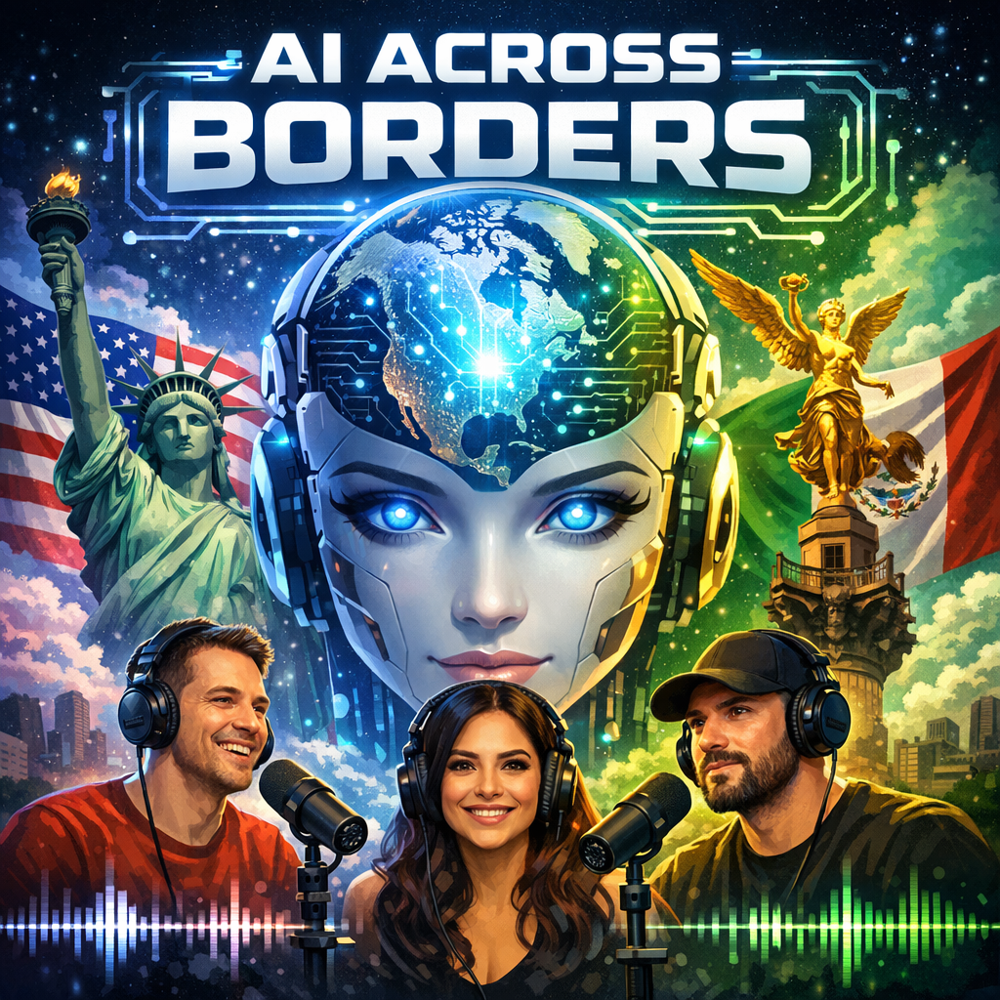
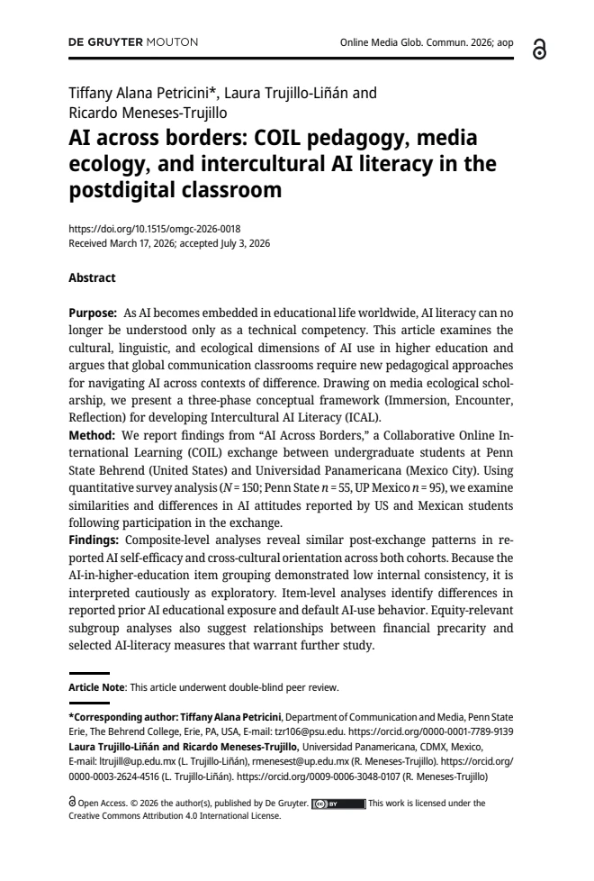
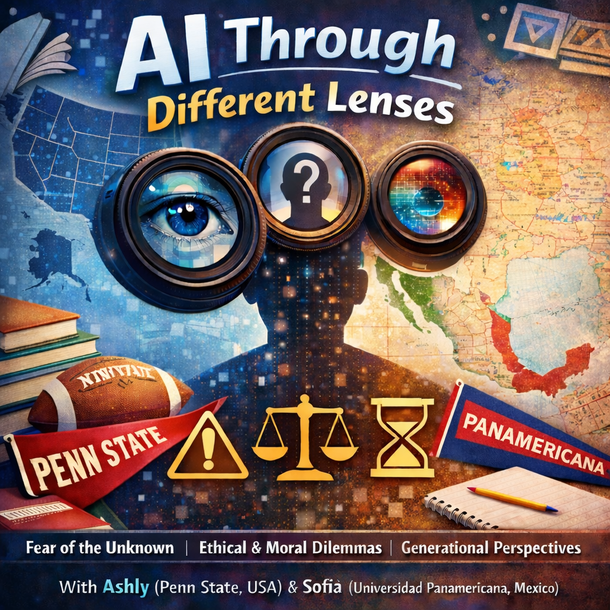

Immersion
Start by examining the AI tools, rules, and assumptions that shape your own coursework and daily life.
Pennsylvania ↔ Mexico City · Fall 2025
What happens when students in two countries compare how AI shapes their lives?

Tiffany Petricini and Laura Trujillo-Liñán led a six-week Collaborative Online International Learning exchange through Penn State’s EDGE initiative. Students interviewed international partners, produced a podcast together, and reflected individually on how the exchange challenged their assumptions about AI.
The exchange uses three phases to help students notice how language, institutional rules, and access shape what people do with AI.
Start by examining the AI tools, rules, and assumptions that shape your own coursework and daily life.
Interview a partner at the other university. Compare concrete experiences, then plan and record a podcast together.
Revisit one assumption from the start of the exchange. Identify a specific moment in the conversation that changed how you understood it.
In the published study, students in the two cohorts reported similar confidence in using AI. Their prior exposure and routine use differed. The authors use media ecology to explain why confidence alone tells us little about the language, infrastructure, and institutional expectations that shape students’ choices.
In a separate class debrief, students noted shared concerns about privacy, misinformation, and academic integrity. Their reflections also brought out practical differences, including subscription prices, university AI policies, and how tools handled regional Spanish.
For educators: Give partners a shared scheduling window and an asynchronous option. Ask each student to anchor their reflection in something their partner actually said.
Petricini, T. A., Trujillo-Liñán, L., & Meneses-Trujillo, R. (2026). AI across borders: COIL pedagogy, media ecology, and intercultural AI literacy in the postdigital classroom. Online Media and Global Communication.

Open the first-page preview to read the full PDF, or download a copy.
Associate Teaching Professor of Communication
Penn State Behrend

Professor and researcher in humanities, communication, and philosophy
Universidad Panamericana
Noah Gabreski, Mia, and Luciano · 10:32
Open episode
Ashly Meeker and Sofía Peña · 9:47
Open episode · Read the episode blurb (PDF)